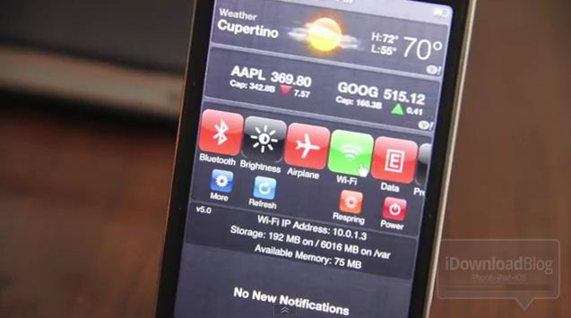
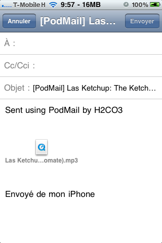
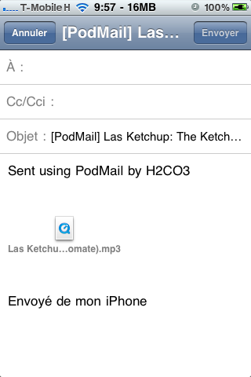

Ho testato più volte le funzionalità di AirPlay con il mio iPhone, e sono sempre stato colpito positivamente. Come saprete, AirPlay, di norma, funziona solo tra dispositivi Apple (Apple Tv o Mac e iDevice). Tuttavia, un paio di applicazioni per Windows hanno permesso per molto tempo l’AirPlay anche su quest’ultimo. In questi giorni, testando le nuove features presenti in iOS 5, ho potuto constatare che iOS 5 impedisce con i vecchi programmi la condivisione di tutto ciò che non è musica. Cercando notizie ed informazioni, la rete sembra esserne all’oscuro. Eppure un importante programma oggi non funziona più su iOS 5. Continua la lettura »
Ho testato più volte le funzionalità di AirPlay con il mio iPhone, e sono sempre stato colpito positivamente. Come saprete, AirPlay, di norma, funziona solo tra dispositivi Apple (Apple Tv o Mac e iDevice). Tuttavia, un paio di applicazioni per Windows hanno permesso per molto tempo l’AirPlay anche su quest’ultimo. In questi giorni, testando le nuove features presenti in iOS 5, ho potuto constatare che iOS 5 impedisce con i vecchi programmi la condivisione di tutto ciò che non è musica. Cercando notizie ed informazioni, la rete sembra esserne all’oscuro. Eppure un importante programma oggi non funziona più su iOS 5. Continua la lettura »
Su youtube è apparso un video in cui google ci mostra la nuova interfaccia di gmail, ora molto simile a quella di google docs.
La nuova veste grafica è molto bella, una vera lezione di design.

Finalmente è possibile ordinare gli iPhone 4s anche sullo store italiano della apple!
I tempi di spedizione sono di 1-2 settimane in questo momento, mentre i prezzi ufficiali sono:
- iPhone 4s 16 GB 659€
- iPhone 4s 32 GB 779€
- iPhone 4s 64 GB 899€

E’ stata finalmente rilasciata la Beta 6 di Redsn0w, che diventa così compatibile anche con Windows nella sezione di Custom Firmware. Il Jailbreak resta comunque Tethered. Questo tool è compatibile con tutti i Device, esclusi l’iPad 2 e l’iPhone 4S.
Ricordo che il Jailbreak Tethered è un semi-jailbreak: ogni qual volta il dispositivo si spegne, si dovrà riattivare tramite Redsn0w (mettendo la spunta su “Just boot tethered only“). Per chi lo volesse eseguire, di seguito i link:
AGGIORNAMENTO (21/10/2011): Il DevTeam ha appena rilasciato la Beta 7 per Mac e Windows. La nuova versione velocizza solo il processo di Jailbreak.
Ecco la guida al Jailbreak:
Arriva iOS 5, e puntualmente arriva il Jailbreak Tethered. Redsn0w è stato aggiornato per poter eseguire il Jailbreak su iOS 5. Ricordo che il Jailbreak Tethered è un semi-jailbreak: ogni qual volta il dispositivo si spegne, si dovrà riattivare tramite Redsn0w (mettendo la spunta su “Just boot tethered only“). Per chi lo volesse eseguire, di seguito i link:
La beta 5 arriverà per Windows solo dopo ulteriori test (Dev-Team Blog).
Ecco la guida al Jailbreak:
{kind=link}
iOS 5 è stato rilasciato ieri sera, ma molte persone non hanno ancora potuto effettuare il passaggio alla nuova versione del firmware a causa di errori sconosciuti di Apple (errori 3000&co). Tutti questi errori purtroppo non sono risolvibili tramite qualche guida, perché non dipendono da iTunes, bensì dai server Apple. Vediamo di spiegarci meglio.
{kind=link}
Tiny Umbrella è stato aggiornato alla versiine 5.00.12, che porta il pieno supporto ad iOS 5. Potete scaricare la nota applicazione tramite i seguenti link:
Ricordo che se volete salvare i certificati SHSH, potete seguire questa guida, mentre per eseguire il ripristino potete seguire questa guida.

Mentre per installare le versioni beta di iOS5 c’era bisogno di essere sviluppatori, per installare la GM non è più necessario.
La versione GM di un software è la versione successiva alla BETA ed al 99% sarà identica alla versione finale.
Ebbene sì, anche il caro SBSettings che tutti conoscerete (per chi non lo conoscesse si tratta di un utilissimo tweak che permette di accedere alle più basilari impostazioni, quali luminosità, WiFi, Airplane Mode, Attiva/Disattiva 3G e Connessione dati, a tanto altro, da qualsiasi applicazione e in qualsiasi momento) è finalmente giunto su iOS 5 Beta.  Il tweak si integra perfettamente nel Centro Notifiche di iOS 5. Ecco un video che mostra le funzionalità del nuovo SBSettings integrato (dopo il salto).
Il tweak si integra perfettamente nel Centro Notifiche di iOS 5. Ecco un video che mostra le funzionalità del nuovo SBSettings integrato (dopo il salto).
{kind=link}
E’ disponibile da poco nella repository di BigBoss il tweak PodMail, che permette di inviare i brani musicali e i video contenuti nella nostra libreria dell’iPod o dell’iPhone per e-mail. Ecco il semplice funzionamento.
 

{kind=link}
Come potete vedere il tweak non crea alcuna nuova icona, ma si integra all’interno dell’app nativa iPod del Device. Basterà andare in “Altro”, e premere su “Mail Songs”, dopodiché basterà selezionare il brano o il video e inviarlo per e-mail scegliendo il destinatario!  Il Tweak è totalmente gratuito, anche se alla fine di ogni utilizzo vi verrà richiesto se volete fare una donazione.
Il Tweak è totalmente gratuito, anche se alla fine di ogni utilizzo vi verrà richiesto se volete fare una donazione.
Commenti recenti